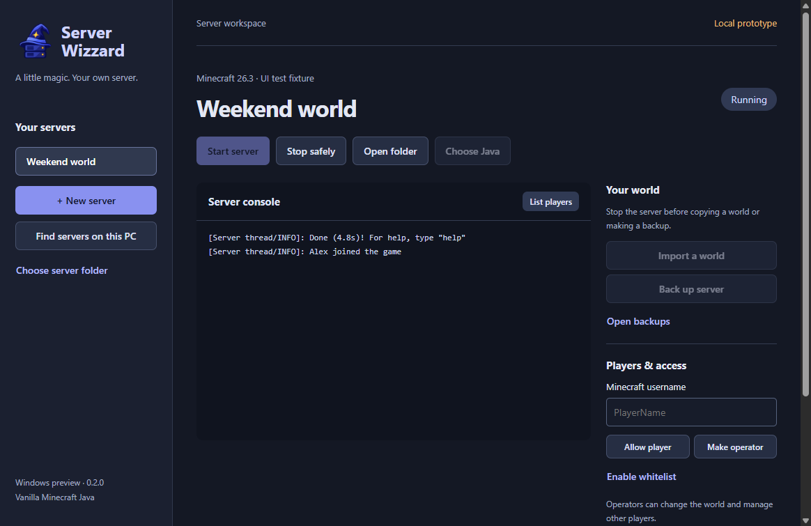

Start with a little help
Choose a supported Minecraft release. Server Wizzard downloads the server and matching Java runtime into a new folder.
A little wizardry for the setup.
A lot more time for the adventure.
Create a Minecraft Java server on your Windows PC, or bring one you already run. Manage your worlds and players from one calm, dark dashboard.
Windows x64 · Vanilla & Fabric servers · Development preview
Local hosting, with a friendlier control panel.
Meet your control room
Keep the useful things close: your server, its status, the console, and the people you want to invite.

Choose a supported Minecraft release. Server Wizzard downloads the server and matching Java runtime into a new folder.
Search user folders, or choose a folder or drive. Review the server candidates and connect the one you want.
Import an extracted Java world. Make a backup of a stopped server and keep your world files on your own computer.
Add players to the whitelist, grant operator access, and use the guided playit instructions to help friends connect.
From folder to first join
Your PC does the hosting. Server Wizzard helps with the rest.
Download and run the Windows installer, then open Server Wizzard from your Desktop shortcut.
Pick a release and accept the Minecraft EULA to create a server. Choose Vanilla or Fabric for mods. Already hosting? Find and connect your existing server folder.
Start your server and join locally. For friends outside your home, set up a playit tunnel and share its public address.
On the hosting PC, download playit, open it and link your own account. Create a Minecraft Java tunnel using local IP 127.0.0.1 and the server’s local port (normally 25565). Paste its public address into Server Wizzard, then use Connection Doctor and share the friend instructions.
On the hosting PC, join localhost:25565 in Minecraft’s Multiplayer → Direct Connection. Friends use your public tunnel address. Keep the PC awake, the server running, and playit running. Add friends to the whitelist in the app.
Ready for a test run?
Try the current build with a new test world or a copy of an existing server.
Download for WindowsWindows x64 · EXE installer · v0.5.16
Free development preview. The installer is not digitally signed yet, so Windows may show an Unknown publisher notice.
Release notes & other downloads ↗Before you summon a server
Yes. Keep the PC awake, the Minecraft server running, and playit running if you use it. You can close the Minecraft game while your friends keep playing.
No. Setup downloads the server software and a matching Java runtime. Players need their own Minecraft Java Edition game to join.
Yes. Search for server folders or choose one yourself. This preview supports Vanilla and Fabric Minecraft Java servers. Connecting a folder does not start the server or change its world.
No. The host uses Server Wizzard. Friends connect from Minecraft Java Edition using the same game version and the server address you share. For modded servers, they also need the required client mods.
This is a development preview. You can manage and restore backups, install compatible Fabric mods, and check for app updates. Broader testing and a signed installer are still ahead. Playit account linking is a separate step.
Not yet. This page offers a development preview. Pricing, licensing and the commercial release will be announced when they’re ready; there is no checkout here.